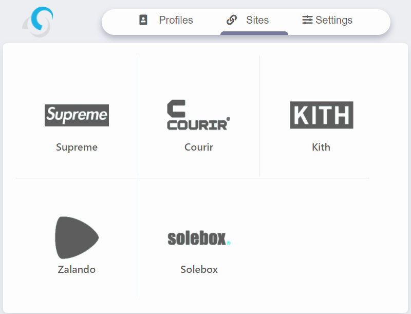
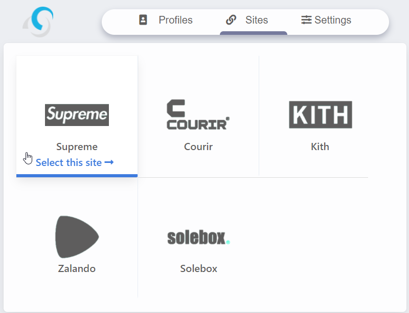
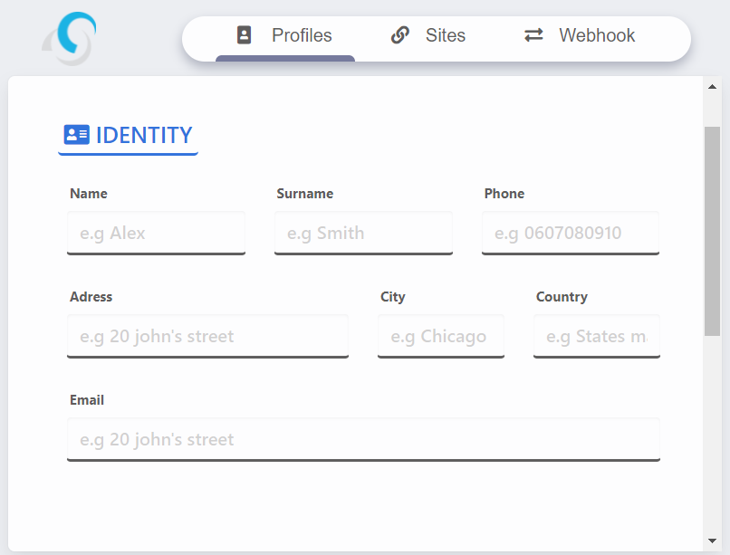
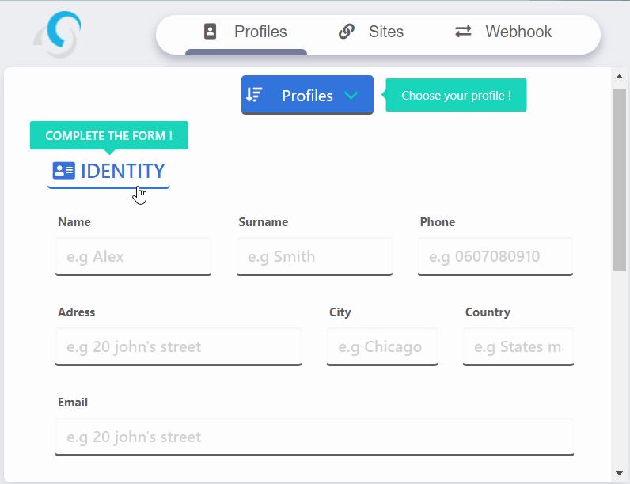
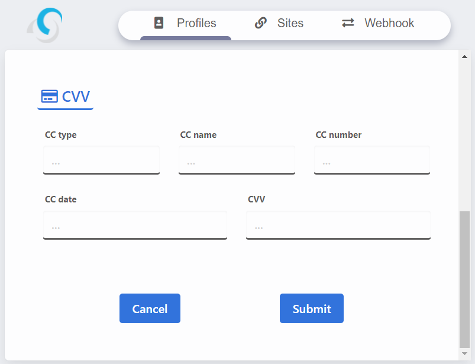
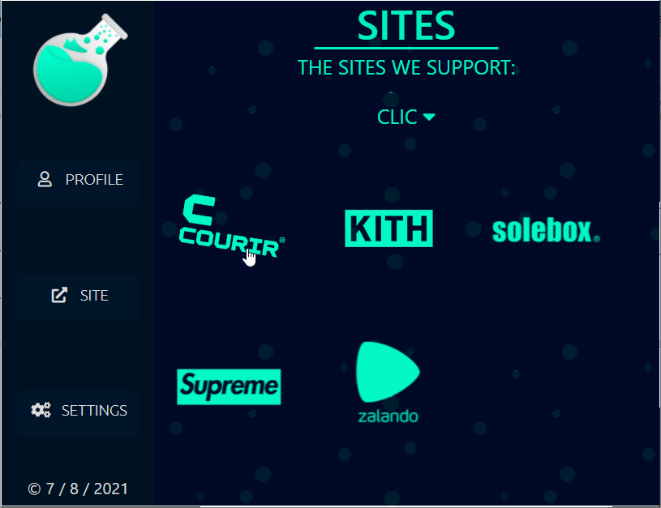
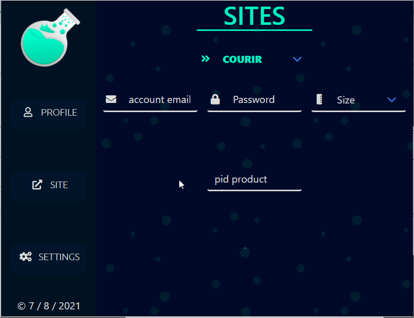
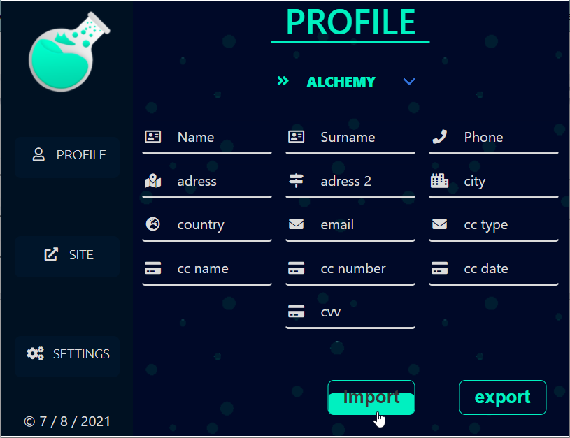

l'extension ?
Une extension permettant d'automatiser des tâches sur des sites internets (présent sur la 1er slide) avec plusieurs profiles





Alchemy
Une extension permettant d'automatiser des tâches sur des sites internets (présent sur la 2e slide) avec plusieurs profiles
Vendu à un client/ Projet terminé
Voir le Twitter



